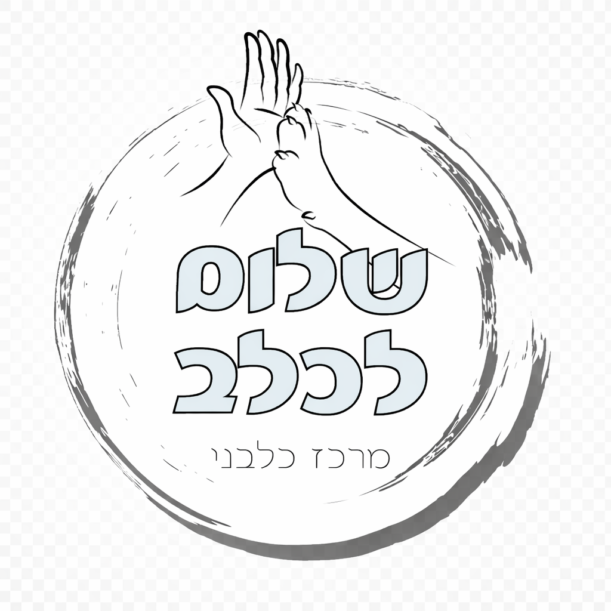

<!doctype html>
<html lang="he" dir="rtl">
<head>
<meta charset="UTF-8" />
<meta name="viewport" content="width=device-width, initial-scale=1.0" />
<title>שלום לכלב - הכלב המאוזן</title>
<style>
*{box-sizing:border-box}body{margin:0;font-family:Arial,Helvetica,sans-serif;background:linear-gradient(135deg,#fff7ed,#f1f5f9);color:#0f172a}.page{min-height:100vh;padding:22px}.wrap{max-width:1180px;margin:auto}.card{background:#fff;border:1px solid #e2e8f0;border-radius:24px;box-shadow:0 12px 35px rgba(15,23,42,.1);padding:22px;margin-bottom:18px}.center{min-height:100vh;display:flex;align-items:center;justify-content:center}.hero{text-align:center;max-width:980px}.hero-emoji{font-size:68px}h1{font-size:44px;margin:12px 0;font-weight:900}h2{margin:0 0 14px;font-size:24px}p{line-height:1.65;color:#475569}.features{display:grid;grid-template-columns:repeat(3,1fr);gap:12px;margin:20px 0}.feature{border:1px solid #fed7aa;background:#fff7ed;border-radius:20px;padding:16px}.feature span{font-size:32px;display:block}.form{max-width:650px;margin:auto;display:grid;gap:10px;text-align:right}label{font-weight:700;color:#334155}input{border:1px solid #cbd5e1;border-radius:14px;padding:14px;font-size:16px}button{border:0;border-radius:18px;background:#0f172a;color:#fff;font-weight:800;font-size:15px;padding:14px 18px;cursor:pointer;transition:.18s;display:inline-flex;align-items:center;justify-content:center;gap:8px}button:hover{transform:translateY(-1px);filter:brightness(1.08)}.primary{width:100%;font-size:18px;padding:17px}.outline{background:#fff;color:#0f172a;border:1px solid #cbd5e1}.tiny{text-align:center;font-size:13px;color:#64748b}.layout{display:grid;grid-template-columns:2fr 1fr;gap:18px}.notification{background:#0f172a;color:#fff;border-radius:24px;padding:16px;margin-bottom:18px;display:flex;align-items:center;justify-content:space-between;gap:12px;box-shadow:0 16px 44px rgba(15,23,42,.22)}.notif-main{display:flex;align-items:center;gap:12px}.notif-emoji{font-size:40px}.notification small{display:block;color:#cbd5e1;margin-top:4px}.notification button{background:rgba(255,255,255,.12);padding:10px 14px}.stage{text-align:center;background:#fff;border:1px solid #e2e8f0;border-radius:24px;padding:22px}.dog{font-size:90px;animation:pulse .7s ease}@keyframes pulse{from{transform:scale(.92);opacity:.4}to{transform:scale(1);opacity:1}}.mood{font-size:20px;font-weight:800;margin:10px 0}.scene{max-width:620px;margin:14px auto;background:#fffbeb;border:1px solid #fde68a;border-radius:24px;padding:18px;animation:slide .25s ease}@keyframes slide{from{transform:translateY(10px);opacity:.3}to{transform:translateY(0);opacity:1}}.scene-emoji{font-size:48px}.actions{display:grid;grid-template-columns:repeat(4,1fr);gap:10px;margin-top:16px}.top{display:flex;justify-content:space-between;align-items:flex-start;gap:12px}.stat{margin-bottom:13px}.stat-top{display:flex;justify-content:space-between;font-weight:700;font-size:14px;color:#334155}.bar{height:12px;background:#e2e8f0;border-radius:999px;overflow:hidden}.bar-fill{height:100%;background:#0f172a;border-radius:999px;transition:.3s}.score{text-align:center;border-top:1px solid #e2e8f0;padding-top:14px}.score b{font-size:42px}.task,.history,.term,.video{border:1px solid #e2e8f0;border-radius:14px;padding:12px;margin-bottom:8px;color:#475569;background:#fff}.task.done{background:#ecfdf5;border-color:#bbf7d0;color:#166534;font-weight:800}.term summary{font-weight:800;cursor:pointer;color:#0f172a}.ask{background:linear-gradient(135deg,#fff7ed,#fff);border:2px solid #fed7aa}.video{display:flex;justify-content:space-between;align-items:center}.video small{display:block;color:#64748b;margin-top:4px}.summary{background:#0f172a;color:#fff;border-radius:22px;padding:18px;margin-top:16px;display:flex;justify-content:space-between;align-items:center;gap:12px}.summary p{color:#cbd5e1;margin:5px 0 0}@media(max-width:900px){.layout{grid-template-columns:1fr}.actions{grid-template-columns:repeat(2,1fr)}.features{grid-template-columns:1fr}h1{font-size:34px}.page{padding:12px}.top,.summary{flex-direction:column}.notification{align-items:flex-start}}
</style>
</head>
<body>
<div id="app"></div>
<script>
const clamp=(v,min=0,max=100)=>Math.max(min,Math.min(max,v));
const breedProfiles={
"בורדר קולי":{energy:85,calm:35,bond:70,tired:20,note:"גזע אנרגטי וחכם מאוד שצריך פריקה ומנטליות."},
"מלינואה":{energy:92,calm:28,bond:65,tired:18,note:"כלב עבודה עם דרייב גבוה מאוד."},
"פודל":{energy:68,calm:48,bond:76,tired:22,note:"כלב חכם, רגיש, חברתי וזקוק לגירוי מנטלי וקשר."},
"לברדור":{energy:72,calm:52,bond:78,tired:25,note:"חברותי מאוד וזקוק לפעילות וקשר."},
"גולדן רטריבר":{energy:70,calm:58,bond:82,tired:25,note:"כלב משפחתי וחברותי עם צורך בקשר ופעילות."},
"רועה גרמני":{energy:82,calm:45,bond:75,tired:20,note:"כלב עבודה חכם מאוד שזקוק להכוונה, משימות ותקשורת ברורה."},
"האסקי סיבירי":{energy:90,calm:30,bond:65,tired:18,note:"כלב אנרגטי מאוד שזקוק לפריקה פיזית ומנטלית קבועה."},
"שיצו":{energy:45,calm:65,bond:75,tired:30,note:"כלב לוויה רגוע יחסית."},
"פומרניאן":{energy:60,calm:45,bond:72,tired:28,note:"כלב קטן, ערני ואנרגטי שזקוק גם לפריקה וגם לגבולות ברורים."},
"קנה קורסו":{energy:65,calm:58,bond:74,tired:30,note:"כלב עוצמתי שזקוק להכוונה, יציבות וניהול נכון."},
"דוברמן":{energy:84,calm:38,bond:78,tired:20,note:"כלב עם דרייב גבוה שזקוק לעבודה, תקשורת ופריקה מסודרת."},
"בולדוג צרפתי":{energy:42,calm:70,bond:80,tired:40,note:"כלב רגוע יחסית שזקוק לפריקות קצרות והתאמה ליכולת הנשימה והמאמץ שלו."},
"ג׳ק ראסל":{energy:95,calm:22,bond:68,tired:18,note:"כלב קטן עם אנרגיה ודרייב גבוה מאוד שזקוק להרבה ניהול ופריקה."},
"קוקר ספניאל":{energy:68,calm:50,bond:77,tired:25,note:"כלב רגיש וחברותי עם צורך בפעילות, קשר והכוונה רגועה."},
"מעורב":{energy:60,calm:50,bond:60,tired:25,note:"כל כלב מעורב שונה בהתאם לאופי ולסביבה."},
"אחר":{energy:60,calm:50,bond:60,tired:25,note:"לא זיהינו גזע ספציפי, לכן נתחיל מפרופיל כללי ונלמד לפי ההתנהגות."}
};
const terms=[["עוררות","המצב הרגשי והאנרגטי של הכלב. עוררות גבוהה מדי יכולה לגרום לקושי להירגע ולהקשיב."],["סף תגובתיות","הנקודה שבה הכלב כבר מגיב לגירוי וקשה יותר להחזיר אותו לרוגע."],["גירוי","כל דבר שהכלב מגיב אליו — אנשים, כלבים, רעשים, כדור, אוכל ועוד."],["דרייב","המוטיבציה הפנימית של הכלב לפעול — משחק, מזון, ציד, עבודה או תנועה."],["חיזוק","משהו שהכלב אוהב ולכן מגדיל סיכוי שהתנהגות תחזור שוב."]];
let state={selected:false,name:"",breed:"מעורב",day:1,turns:0,stats:{energy:60,calm:40,bond:50,tired:20,hunger:35},tasks:{morningWalk:false,morningFood:false,mentalWork:false,eveningFood:false,eveningWalk:false,rest:false},history:[],notification:null,scene:{emoji:"🐶",title:"הכלב מחכה להחלטה שלך",text:"בחר פעולה ותראה מה קורה לו במהלך היום."}};
const app=document.getElementById("app");
function detectBreed(text){return Object.keys(breedProfiles).find(b=>String(text||"").includes(b))||"מעורב"}function score(){const s=state.stats;const eb=100-Math.abs(s.energy-45);const tp=s.tired>80?(s.tired-80)*1.5:0;const hp=s.hunger>75?(s.hunger-75)*1.5:0;return clamp(Math.round((eb+s.calm*1.2+s.bond)/3-tp-hp))}
function mood(){const s=state.stats;if(s.hunger>80)return"הכלב רעב וקשה לו להתרכז.";if(s.energy>80&&s.calm<35)return"הכלב מוצף באנרגיה וקשה להשתלט עליו.";if(s.tired>85)return"הכלב עייף מדי, עכשיו הוא צריך מנוחה ולא עוד דרישות.";if(s.calm>70&&s.bond>65)return"הכלב רגוע, קשוב ומחובר אליך.";if(s.bond<35)return"הקשר נמוך — הכלב פחות מחפש שיתוף פעולה.";return"הכלב במצב סביר, אבל היום עוד לא מאוזן לגמרי."}
function play(type){try{const audio=new Audio(type==="bark"?"https://assets.mixkit.co/active_storage/sfx/2354/2354-preview.mp3":type==="success"?"https://assets.mixkit.co/active_storage/sfx/2000/2000-preview.mp3":"https://assets.mixkit.co/active_storage/sfx/2571/2571-preview.mp3");audio.volume=type==="bark"?.35:.22;audio.play()}catch(e){}}
function notify(type){const n=state.name||"הכלב שלך";const m={no_morning_walk:["🌅🦮","טיול בוקר עדיין לא בוצע",`${n} עוד לא יצא לטיול בוקר. זה הזמן להתחיל לפרוק אנרגיה בצורה נכונה.`],no_evening_walk:["🌙🦮","טיול ערב חסר",`${n} צריך סגירת יום רגועה עם טיול ערב קצר או ארוך לפי האנרגיה שלו.`],no_food:["🍖","ארוחה חסרה",`${n} עדיין לא קיבל את אחת הארוחות שלו היום.`],high_energy:["⚡","הכלב באנרגיה גבוהה",`${n} צריך פריקת אנרגיה או פעילות משותפת.`],bark:["🐶🔊","הכלב נובח בבית",`${n} מתחיל לנבוח ולחפש פריקה או רוגע.`],balanced:["😌","יום מאוזן",`כל הכבוד. היום עזרת ל-${n} להיות רגוע ומאוזן יותר.`]}[type];state.notification={emoji:m[0],title:m[1],text:m[2]};if(type==="bark")play("bark")}
function addHistory(t){state.history=[t,...state.history].slice(0,6)}
function statBar(label,val){return`<div class="stat"><div class="stat-top"><span>${label}</span><span>${val}/100</span></div><div class="bar"><div class="bar-fill" style="width:${val}%"></div></div></div>`}
function task(k,l){return`<div class="${state.tasks[k]?'task done':'task'}">${state.tasks[k]?'✅':'⬜'} ${l}</div>`}
function renderStart(){app.innerHTML=`<div class="page center"><div class="card hero"><h1>מה הכלב שלך צריך היום?</h1><p>
חוויה אינטראקטיבית לניהול שגרת היום של הכלב שלכם - עם תזכורות חכמות, למידה והבנה אמיתית של הצרכים שלו.<br><br>
<strong>שגרה נכונה היא הבסיס לכלב רגוע ומאוזן</strong>
</p><div class="features"><div class="feature"><span>⚡</span><b>בדיקת מצב יומית</b><p>מה חסר לכלב שלך — פריקה, רוגע או קשר?</p></div><div class="feature"><span>🎯</span><b>אתגר יומי</b><p>נסה לסיים יום עם כלב רגוע ומאוזן.</p></div><div class="feature"><span>🎥</span><b>לומדים להבין כלבים</b><p>הסברים קצרים מתוך מצבים אמיתיים.</p></div></div><div class="form"><label>שם הכלב</label><input id="dogName" placeholder="לדוגמה: לוקה"><label>גזע / סוג הכלב</label><select id="breed" style="border:1px solid #cbd5e1;border-radius:14px;padding:14px;font-size:16px;">
  <option>בורדר קולי</option>
  <option>מלינואה</option>
  <option>פודל</option>
  <option>לברדור</option>
  <option>גולדן רטריבר</option>
  <option>רועה גרמני</option>
  <option>האסקי סיבירי</option>
  <option>שיצו</option>
  <option>פומרניאן</option>
  <option>קane Corso</option>
  <option>דוברמן</option>
  <option>בולדוג צרפתי</option>
  <option>ג׳ק ראסל</option>
  <option>קוקר ספניאל</option>
<option>מעורב</option>
<option selected>אחר</option>
</select><label>גיל הכלב</label><input id="age" type="number" placeholder="בשנים"><button class="primary" onclick="start()">בוא נראה מה הכלב שלך צריך היום</button><p class="tiny">זה לוקח פחות מדקה: מזינים כלב, מקבלים יום משחק, תגובות וטיפים לפי הבחירות שלך.</p><div class="card ask">
  <h2>🧠 AI כלבני</h2>

  <p>
    שאלו שאלה על ההתנהגות, השגרה או האנרגיה של הכלב שלכם.
  </p>

  <input 
    id="aiQuestion" 
    placeholder="למה הכלב שלי לא רגוע בערב?"
    style="width:100%;padding:14px;border-radius:14px;border:1px solid #cbd5e1;margin-bottom:10px;"
  >

  <button onclick="dogAI()">
    שאל את ה־AI
  </button>

  <div 
    id="aiAnswer"
    style="margin-top:14px;padding:12px;border-radius:14px;background:#f8fafc;color:#334155;"
  >
  </div>
</div></div></div></div>`}
function render(){if(!state.selected){renderStart();return}const s=state.stats,sc=score();app.innerHTML=`<div class="page"><div class="wrap">${state.notification?`<div class="notification"><div class="notif-main"><div class="notif-emoji">${state.notification.emoji}</div><div><b>${state.notification.title}</b><small>${state.notification.text}</small></div></div><button onclick="closeNotification()">סגור</button></div>`:""}<div class="layout"><main class="card"><div class="top"><div><h1>${state.name} — יום ${state.day}</h1><p>${["המטרה היום: לבנות לכלב יום מאוזן — פריקה, תקשורת ומנוחה.","המטרה היום: לא רק לעייף את הכלב, אלא גם ללמד אותו להירגע.","המטרה היום: לשלב פעילות, אוכל, קשר ומנוחה בלי להציף את הכלב."][(state.day-1)%3]}</p></div><button class="outline" onclick="reset()">↻ התחלה מחדש</button></div><div class="stage"><div class="dog">🐶</div><div class="mood">${mood()}</div><div class="scene"><div class="scene-emoji">${state.scene.emoji}</div><b>${state.scene.title}</b><p>${state.scene.text}</p></div><div>פעולות היום: ${state.turns}/8</div></div><div class="actions"><button onclick="action('morning_walk')">🦮 טיול בוקר</button><button onclick="action('long_walk')">🌳 טיול ארוך / פריקה</button><button onclick="action('evening_walk')">🌙 טיול ערב</button><button onclick="action('shared_play')">🎾 משחק משותף</button><button onclick="action('morning_food')">🥣 מזון בוקר</button><button onclick="action('evening_food')">🍖 מזון ערב</button><button onclick="action('mental_work')">🧠 פריקה מנטלית</button><button onclick="action('place')">🛏️ מקום / מנוחה</button></div>${state.turns>=8?`<div class="summary"><div><b>סיכום יום: ${sc}/100</b><p>${sc>75?"יום מאוזן מאוד. הכלב קיבל שילוב נכון של פעילות, קשר ומנוחה.":"יש מה לשפר: נסה לאזן טוב יותר בין פריקה, אימון ומנוחה."}</p></div><button onclick="nextDay()">המשך ליום הבא</button></div>`:""}</main><aside><div class="card"><h2>❤️ מדדי הכלב</h2>${statBar("אנרגיה",s.energy)}${statBar("רוגע",s.calm)}${statBar("קשר עם הבעלים",s.bond)}${statBar("עייפות",s.tired)}${statBar("רעב",s.hunger)}<div class="score"><small>ציון איזון נוכחי</small><b>${sc}</b></div></div><div class="card"><h2>🔔 משימות היום</h2>${task("morningWalk","טיול בוקר")}${task("morningFood","מזון בוקר")}${task("mentalWork","פריקה מנטלית")}${task("eveningFood","מזון ערב")}${task("eveningWalk","טיול ערב")}${task("rest","מקום / מנוחה")}</div><div class="card"><h2>כמה עזרת לכלב שלך?</h2>${state.history.map(h=>`<div class="history">${h}</div>`).join("")}</div><div class="card"><h2>מושגים מקצועיים</h2>${terms.map(t=>`<details class="term"><summary>${t[0]}</summary><p>${t[1]}</p></details>`).join("")}</div><div class="card ask"><h2>🐶 שאל את שלום</h2><p>שאלות נפוצות עם סרטוני הסבר קצרים מתוך העולם האמיתי.</p>${["למה הכלב שלי לא נרגע בבית?","מתי נכון לתת אוכל לכלב?","למה חשוב ללמד מקום ומנוחה?"].map(q=>`<div class="video"><div><b>${q}</b><small>סרטון קצר ייפתח כאן בהמשך.</small></div><span>▶️</span></div>`).join("")}</div></aside></div></div></div>`}
function start(){const name=document.getElementById("dogName").value||"הכלב שלך";const breedText=document.getElementById("breed").value||"מעורב";const age=Number(document.getElementById("age").value||3);const b=detectBreed(breedText),data=breedProfiles[b];let energy=data.energy,calm=data.calm,tired=data.tired;if(age<=1){energy+=12;calm-=10}if(age>=8){energy-=15;tired+=15;calm+=8}state={...state,selected:true,name,breed:b,day:1,turns:0,stats:{energy:clamp(energy),calm:clamp(calm),bond:data.bond,tired:clamp(tired),hunger:40},tasks:{morningWalk:false,morningFood:false,mentalWork:false,eveningFood:false,eveningWalk:false,rest:false},history:[`${name} הוא ${b}. ${data.note}`],notification:null,scene:{emoji:"🐶",title:"היום מתחיל",text:"עכשיו מתחילים לבנות לכלב סדר יום נכון ומאוזן."}};render()}
function action(a){let n={...state.stats},msg="";const setScene=(emoji,title,text)=>state.scene={emoji,title,text};if(a==="morning_walk"){state.tasks.morningWalk=true;setScene("🌅🧍‍♂️🦮","טיול בוקר","פתחתם את היום עם תנועה, ריח ופריקה ראשונית.");n.energy=clamp(n.energy-14);n.calm=clamp(n.calm+8);n.bond=clamp(n.bond+5);n.tired=clamp(n.tired+8);n.hunger=clamp(n.hunger+5);msg="טיול בוקר עזר לפתוח את היום בצורה מאוזנת ולהוריד עומס אנרגטי."}if(a==="evening_walk"){state.tasks.eveningWalk=true;setScene("🌙🧍‍♂️🦮","טיול ערב","טיול ערב עוזר לסגור את היום ולהכניס את הכלב לשגרה רגועה יותר.");n.energy=clamp(n.energy-18);n.calm=clamp(n.calm+12);n.bond=clamp(n.bond+6);n.tired=clamp(n.tired+10);n.hunger=clamp(n.hunger+5);msg="טיול ערב עזר לפרוק שאריות אנרגיה ולהכין את הכלב למנוחה."}if(a==="long_walk"){state.tasks.morningWalk=true;setScene("🧍‍♂️🦮🌳🏃","טיול ארוך / פריקה","הכלב יצא לפריקה אמיתית, הוציא אנרגיה וחזר פנוי יותר לרוגע.");n.energy=clamp(n.energy-24);n.calm=clamp(n.calm+14);n.bond=clamp(n.bond+8);n.tired=clamp(n.tired+18);n.hunger=clamp(n.hunger+10);msg="טיול ארוך ופריקת אנרגיה נכונה עזרו לכלב להתאזן ולהיות רגוע יותר."}if(a==="shared_play"){setScene("🧍‍♂️🐕🎾","משחק משותף","אתם משחקים יחד. הקשר מתחזק, אבל חשוב לעצור לפני שהכלב עולה מדי.");n.energy=clamp(n.energy-12);n.bond=clamp(n.bond+12);n.tired=clamp(n.tired+10);n.calm=clamp(n.calm-(state.stats.calm<35?8:3));n.hunger=clamp(n.hunger+5);msg=state.stats.calm<35?"משחק כשהכלב כבר לא רגוע עלול להרים עוררות. צריך לדעת לעצור בזמן.":"משחק משותף חיזק קשר ופרק קצת אנרגיה."}if(a==="morning_food"||a==="evening_food"){state.tasks[a==="morning_food"?"morningFood":"eveningFood"]=true;setScene("🐶🥣",a==="morning_food"?"מזון בוקר":"מזון ערב","הכלב אוכל מהקערה. תזמון נכון של אוכל משפיע על רוגע ופניות.");if(state.stats.hunger<25){n.calm=clamp(n.calm-8);n.energy=clamp(n.energy+10);msg="נתת יותר מדי אוכל בזמן קצר. האכלת יתר יכולה ליצור אי נוחות וחוסר איזון."}else if(state.stats.energy>70){n.hunger=clamp(n.hunger-30);n.calm=clamp(n.calm+3);n.energy=clamp(n.energy+6);msg="לתת אוכל לפני פריקת אנרגיה מלאה זה לא אידיאלי. פעילות אינטנסיבית אחרי אוכל עלולה להיות מסוכנת אצל חלק מהכלבים."}else{n.hunger=clamp(n.hunger-35);n.calm=clamp(n.calm+5);n.energy=clamp(n.energy+6);msg="אוכל בזמן נכון עוזר לכלב להיות רגוע ופנוי יותר ללמידה."}}if(a==="mental_work"){state.tasks.mentalWork=true;setScene("🐶🧠🧩","פריקה מנטלית","הכלב עובד עם הראש, חושב, מתרכז ומתעייף בצורה איכותית.");const ok=state.stats.energy<80&&state.stats.tired<75&&state.stats.hunger<75;n.bond=clamp(n.bond+(ok?14:5));n.calm=clamp(n.calm+(ok?8:-6));n.tired=clamp(n.tired+10);n.energy=clamp(n.energy-8);n.hunger=clamp(n.hunger+5);msg=ok?"פריקת אנרגיה מנטלית בזמן נכון עזרה לכלב להתרכז, לחשוב ולהתאזן.":"הפריקה המנטלית פחות הצליחה כי הכלב לא היה פנוי — רעב, עייף או מוצף מדי."}if(a==="place"){state.tasks.rest=true;setScene("🐶🛏️😌","מקום / מנוחה","הכלב נשלח למקום, נרגע ולומד שגם מנוחה היא חלק מהיום.");n.calm=clamp(n.calm+18);n.energy=clamp(n.energy+4);n.tired=clamp(n.tired-12);n.bond=clamp(n.bond+4);n.hunger=clamp(n.hunger+4);msg="שליחה למקום ומנוחה אחרי פעילות בונה כלב רגוע יותר, לא רק עייף יותר."}play(n.calm>state.stats.calm||n.bond>state.stats.bond?"success":"warn");state.stats=n;state.turns++;addHistory(msg);if(!state.tasks.morningWalk&&state.turns>=2)notify("no_morning_walk");else if((!state.tasks.morningFood||!state.tasks.eveningFood)&&state.turns>=4)notify("no_food");else if(!state.tasks.eveningWalk&&state.turns>=5)notify("no_evening_walk");else if(n.energy>85&&n.calm<35)notify("bark");else if(n.energy>80)notify("high_energy");else if(n.calm>75&&n.bond>70)notify("balanced");render()}
function closeNotification(){state.notification=null;render()}function nextDay(){state.day++;state.turns=0;state.tasks={morningWalk:false,morningFood:false,mentalWork:false,eveningFood:false,eveningWalk:false,rest:false};state.stats={energy:clamp(state.stats.energy+25),calm:clamp(state.stats.calm-12),bond:clamp(state.stats.bond-5),tired:clamp(state.stats.tired-35),hunger:clamp(state.stats.hunger+35)};state.notification=null;addHistory("יום חדש התחיל. כלב צריך שוב סדר, פריקה, תקשורת ומנוחה.");render()}function reset(){state.selected=false;renderStart()}
render();
</script>
</body>
</html>
